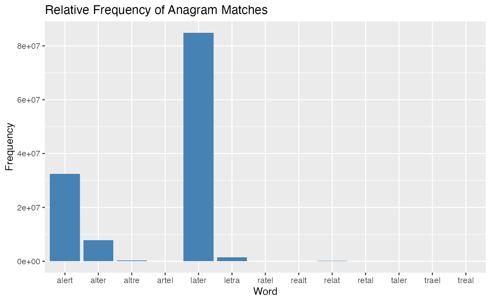

Introduction
The anagram package offers a suite of functionalities designed to handle various tasks related to anagrams. Anagrams, which are words formed by rearranging the letters of another word or phrase, present interesting challenges in linguistic analysis and word manipulation. This package addresses these challenges by providing tools for anagram detection, subset analysis, and frequency visualization.
Data Overview
The dataset used in the anagram package comprises a data frame with 333,333 observations and 2 variables:
Word: Character vector containing English words.
Frequency: Numeric vector representing the frequency count of each word in the corpus.
This dataset serves as the foundation for identifying anagrams and determining their relative frequencies.
Functionality Overview
1.Anagram Checker
The are_anagrams function in the anagram package efficiently determines whether a given set of words are anagrams of each other. It validates the input, normalizes character cases, and compares character distributions to ascertain anagram relationships. Additionally, it offers the flexibility to analyze subsets of words for anagram patterns.
Features:
- Validates input as a character vector and ensures non-empty input.
- Normalizes character cases and removes non-alphabetic characters for consistent comparison.
- Detects anagrams by comparing character counts of each word.
- Offers an option to analyze subsets of words for anagram relationships.
# Check if multiple words are anagrams
are_anagrams(c("aligned", "dealing", "leading"))
#> [1] TRUE
# Check for anagrams within subsets
are_anagrams(c("care", "race", "hello", "world"), subsets = TRUE)
#> [1] FALSEOutput: The function returns TRUE if all words in the input vector are anagrams of each other, and FALSE otherwise. For subset analysis, the function provides insight into whether any combination of words within the subset forms anagrams.
2.Anagram Subset Analysis
- The anagramsubset_function is designed to check whether a subset of words contains anagrams of each other, considering combinations of characters of a specified minimum length. It achieves this by generating all combinations of characters of the specified length for each word and then comparing these combinations to identify any anagrams within the subset.
Features:
- The function first defines three internal helper functions:
- count_chars: Counts the occurrences of each character in a word.
- are_anagrams: Determines whether two words are anagrams of each other by comparing their character counts.
- generate_combinations: Generates all possible combinations of characters of a specified length in a word.
# Example 1: Subset contains anagrams
subset1 <- c("tiger", "right", "tight")
anagramsubset_function(subset1, min_length = 4)
#> [1] TRUE
# Example 2: Subset doesn't contain anagrams
subset2 <- c("hello", "world", "hi")
anagramsubset_function(subset2, min_length = 3)
#> [1] FALSEIn Example 1, the subset contains words (“right” and “tight”) that are anagrams of each other, considering combinations of characters of at least length 4. Therefore, the function returns TRUE.
In Example 2, the subset does not contain any pairs of words that are anagrams of each other, considering combinations of characters of at least length 3. Therefore, the function returns FALSE.
3. Enhanced Anagram Detection with Frequency Analysis
The function anagramfinder_function creates an S3 object containing a list of words found in a given dictionary that contain a specific subset of letters present in the input word. This S3 object also includes frequency information for each word found, enabling detailed analysis and visualization. The output can be easily manipulated and visualized using the provided methods for printing and plotting.
The print.anagram_output method is used to display the output of the anagramfinder_function in a user-friendly format. It shows the input word, the number of matches found, and the matches along with their frequencies.
The plot.anagram_output method visualizes the relative frequencies of the matches found by anagramfinder_function. It provides users with a graphical representation of the data, making it easier to interpret.
# Load the dictionary data
data(dictionary)
# Search for anagrams of the word "alter" in the dictionary
output <- anagramfinder_function("alter", dictionary)
# Print the anagrams found
print(output)
#> Input word: alter
#> Matches found: 13
#> Word Frequency
#> 944 later 84857974
#> 2450 alert 32472727
#> 7413 alter 7831337
#> 21020 letra 1468238
#> 56036 altre 274062
#> 65519 relat 208840
#> 164813 taler 42377
#> 170839 trael 39723
#> 203385 artel 29896
#> 220718 realt 26373
#> 288753 ratel 16306
#> 290005 retal 16174
#> 295371 treal 15628
# Plot the relative frequencies of the anagrams.
plot(output)
In this example, we’re searching for anagrams of the word “alter” in the provided dictionary. The output will show the words found along with their relative frequencies, allowing us to analyze and visualize the results.
After generating matches among the words containing a subset of letters from the input word using the
anagramfinder_function, it’s often valuable to identify the word that appears most frequently within this subset. This is where themost_common_wordfunction comes into play.The
most_common_wordfunction extracts the most common word from the matches found for the input word. It is particularly useful for discerning the word that holds the highest frequency within the subset of words generated byanagramfinder_function.The function calculates the most common word among the matches found for the input word within the
anagram_outputobject. It identifies the word with the highest frequency within this subset and returns it as the most significant word.In the below example, we illustrate the usage of the
most_common_wordfunction with the input word “alter.” First, we use theanagramfinder_functionto generate matches among the words containing a subset of letters from “alter,” based on the provided dictionary. Next, we apply themost_common_wordfunction to extract the most common word among these matches.
# Generate matches among the words containing a subset of letters from the input word "alter"
output <- anagramfinder_function("alter", dictionary)
# Extract the most common word among the matches
common_word <- most_common_word(output)
# Print the most common word
print(common_word)
#> [1] "later"- The output of this example is “later,” indicating that “later” is the most common word among the matches found for the input word “alter.” This demonstrates how the most_common_word function efficiently identifies the word with the highest frequency within the subset of words generated by the anagramfinder_function